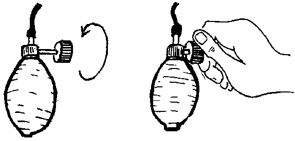

{% set pagetitle = "How to take blood pressure" %}
{% set seq_length = 5 %}
{% set seq_position = 2 %}
{% set seq_llink = "How_to_take_blood_pressure1.html" %}		## set rlink equal to next page href
{% set seq_rlink = "How_to_take_blood_pressure3.html" %}		## set llink equal to previous page href
{% extends "templates.jinja/base.page-with-sequence.html" %}
{% block title %} Hesperian - Pregnancy &amp; Birth{% endblock %}
{% block id %}How_to_take_blood_pressure2{% endblock %}

		{% block content %}
			<div class="hm-horizontal-center">
				
			</div>
			<p>2. Close the valve on the rubber bulb by turning the screw to the right. The screw will get shorter.</p>
		
			<div class="hm-content-relatedlinks">
				<ul data-role="listview" data-theme="b" data-inset="true">
					<li data-theme="b"><a href="javascript:;">If she has high blood pressure</a></li>
				</ul>
			</div>
		{% endblock %}
